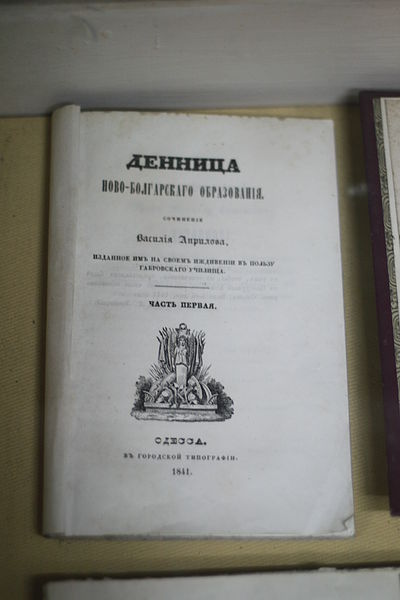
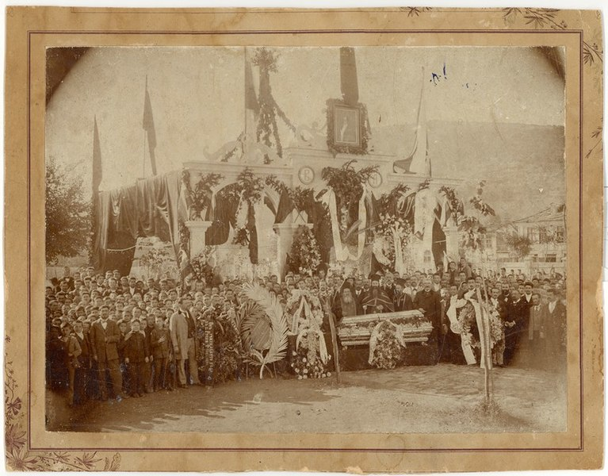

Васил Евстатиев Априлов е роден на 21 юли 1789 г. в гр. Габрово. На единадесетгодишна възраст брат му, търговец, го отвежда в Москва (1800). Впоследствие Априлов завършва гимназия в Брашов и за кратко следва медицина във Виена
Малко по-късно Васил Априлов и брат му Никифор се преместват от Москва в Одеса, която по това време се налага като главен център на западна Новорусия. Първоначално Васил Априлов работи при гръцкия търговец Теодориди, след което заедно с брат си открива фабрика за спиртни напитки. През 1821 година те изграждат фабрика за рафиниране на захар и голям магазин за хранителни и други потребителски стоки.
През 1835 г. с помощта на Николай Ст. Палаузов, на братята Константин и Димитър Мустакови, на други български търговци в странство и на митрополит Иларион Търновски, открива в Габрово първото чисто българско взаимно училище, сегашната Априловска гимназия. Освен значителната парична и организационна помощ, която оказва на българското просветно движение, издава и няколко книги, с които дава насока на възрожденското училищно дело.

През 1847 г. Априлов посещава Габрово. На връщане за Одеса умира в Галац от мъчилата го
дълги години туберкулоза. Завещава на габровската община значителна сума
Първоначално е погребан в Галац, а впоследствие останките му са пренесени в двора на
Априловската гимназия. През 1935 г. пред училищното здание му е издигнат паметник, изработен
от скулптора Кирил Тодоров. В подножието на статуята са изобразени различните етапи от
развитието на българското образование.
